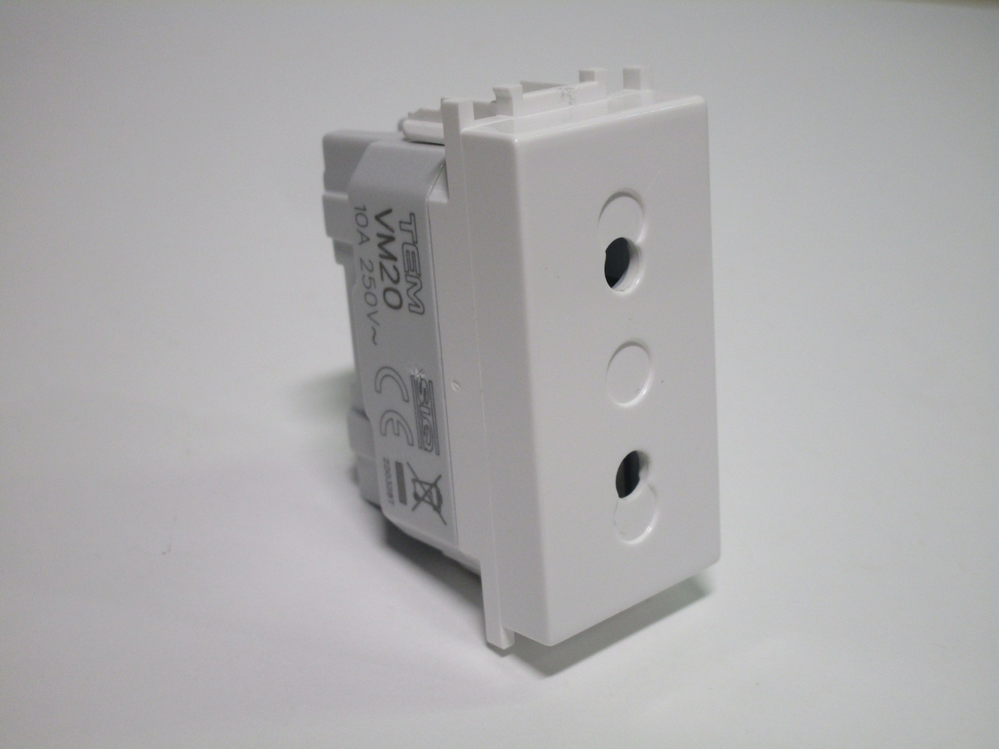
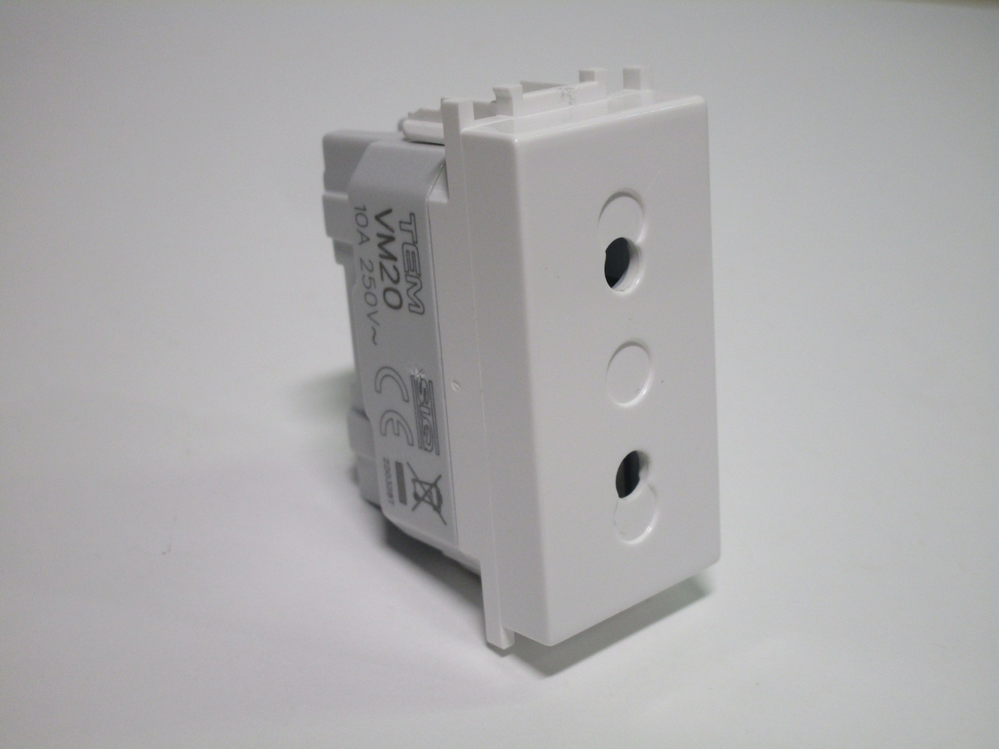

Other styles of plugs and sockets
This page documents types of plugs that don't fit in any of the other pages.
CEE 7/16 - Europlugs
Europlugs are the most common type of plug in use in Continental Europe. They're used for devices not requiring an earth connection, and are rated up to 2.5A. They were specifically designed to work in every style of power socket found in Europe, aside from the UK ones, which meant that manufacturers could sell the same product in multiple countries much more easily.
Rewireable Europlug
While rewireable Europlugs aren't all that common to see, they are generally found in hardware stores. This one is very simple, and easy to wire up.
{kind=link}
{kind=link}
{kind=link}
TEM "Modul" Europlug socket
Rating: 10A 250V
This is a socket module meaant to be used with Europlugs, from Slovenian manufacturer TEM. Its shape is very much derived from a 16A Italian socket module (there's even a spot for where an earth terminal would have gone on the back), which is also available as an option, however in Slovenia Italian plugs aren't used.
Europlug sockets can be useful for situations where a lot of Europlugs might be used, such as for a home theatre system, especially since this module is half the size of a standard Schuko one.
 

{kind=link}

IEC 60309 - Industrial plugs and sockets
This family of industrial plugs and sockets is widely used in 230V countries for single- and three-phase industrial, commerical or heavy duty applications. They're available in a variety of types, with different pin configurations and current and voltage ratings.
The most commonly used versions are the 16A single phase, three phase with neutral, and three phase without neutral versions, though other ones exist for different voltages (125V and lov voltage, for example).
Industrial three-phase 16A plug
Rating: 16A 415V
This particular example is a 5-pin three-phase plug, rated at 16A 380-415V. The five pins are for the three phases (L1, L2, L3), earth (PE) and the neutral connection (N); versions of this connector also exist that don't have a neutral connection, for use with balanced loads such as motors.
The plug is held together without any screws: to open it up a plastic clip has to be pushed in with a screwdriver and then the body of the plug is rotated, revealing the connections. The terminals are shrouded by plastic, to protect against any water leakage (the plug has an IP44 rating); additionally, the earth terminal is longer and has two screws to ensure a strong connection.
{kind=link}
{kind=link}
{kind=link}
Israeli plugs and sockets
The Israeli plug standard is somewhat unusual: it uses pins spaced 19mm apart like on European sockets, but uses a third hole for the earth connection. This also means that they are polarised, when used with earthed plugs.
They are compatible with Europlugs, and newer models also accept Schuko plugs, though without an earth connection.
Standard power socket
Rating: 16A 250V
This socket is built remarkably similarly to European style ones, though notably the frame is made of plastic instead of metal (though this is a particularly cheap one). Notably, it doesn't feature any sort of safety shutters.

{kind=link}
{kind=link}